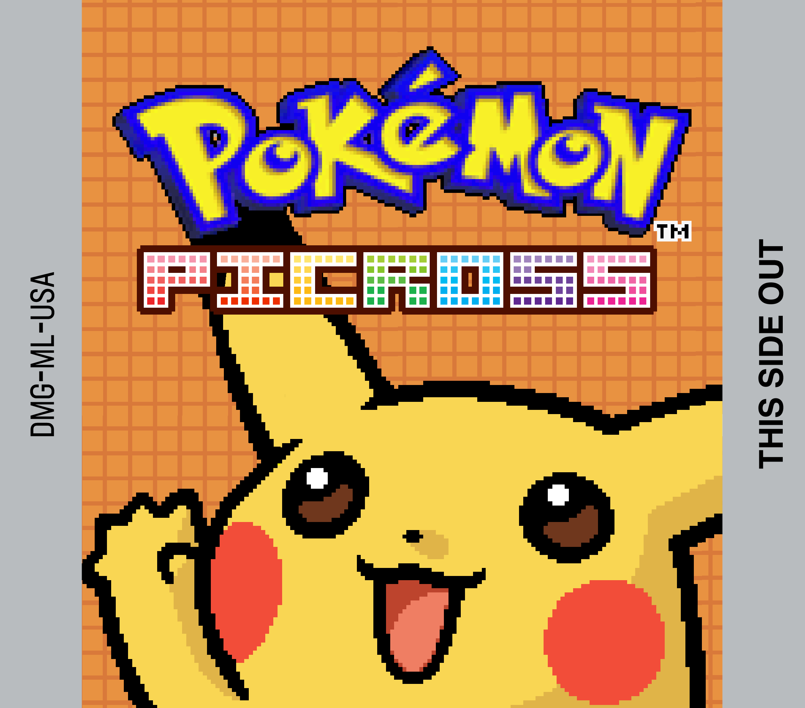
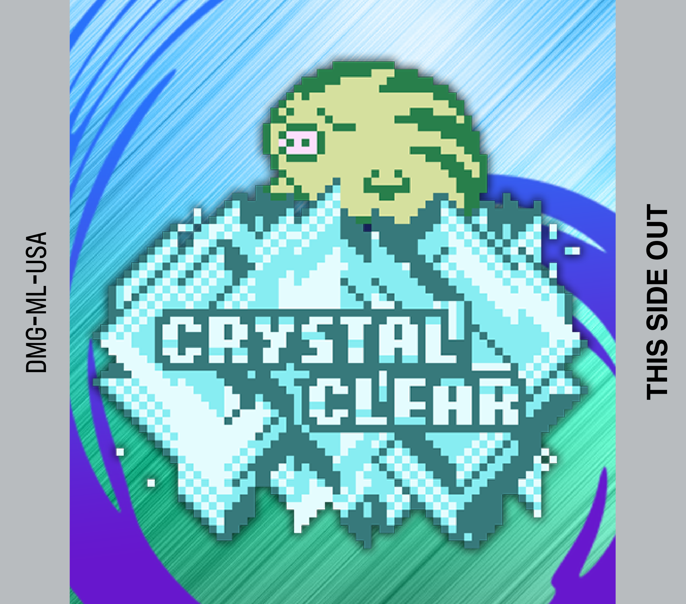

Hi! It's 2024! Ahh!
Just a quick post sharing some custom labels for https://bulbapedia.bulbagarden.net/wiki/Pokémon_Picross_(GBC) and Crystal Clear.
 
Resize these to 42mm x 37mm (or 4.2cm x 3.7cm) and print on sticker paper.
The Picross label is made using edited assets from Pokémon Picross Adventure, which itself is using the 3DS version's logo.
The Crystal Clear label is edited from IGDB.
There are a few game boy cartridge labels for these that are available online, but I prefer the more pixelly art style for these mods specifically.